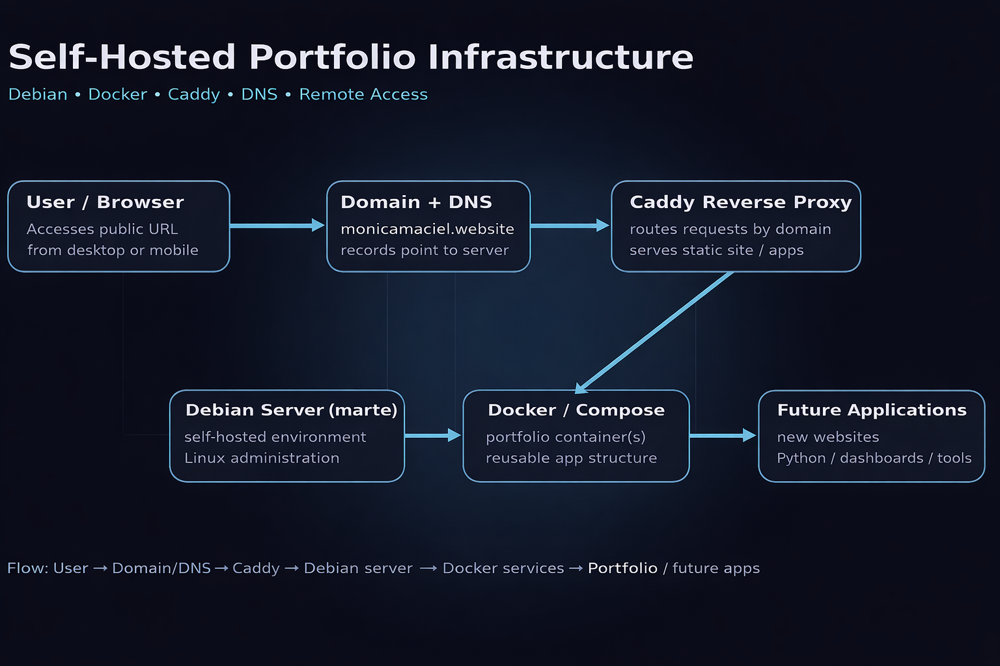
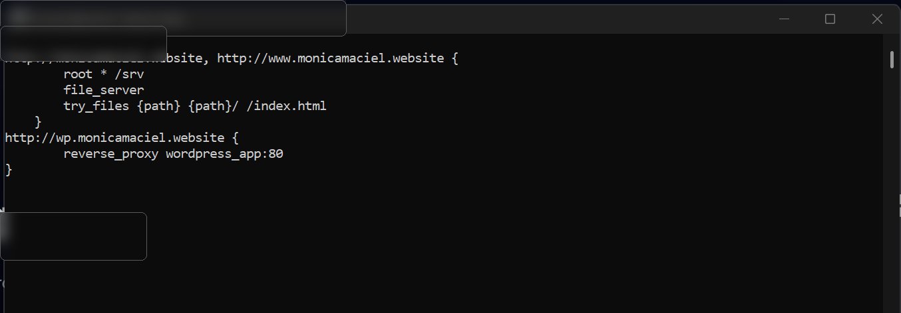
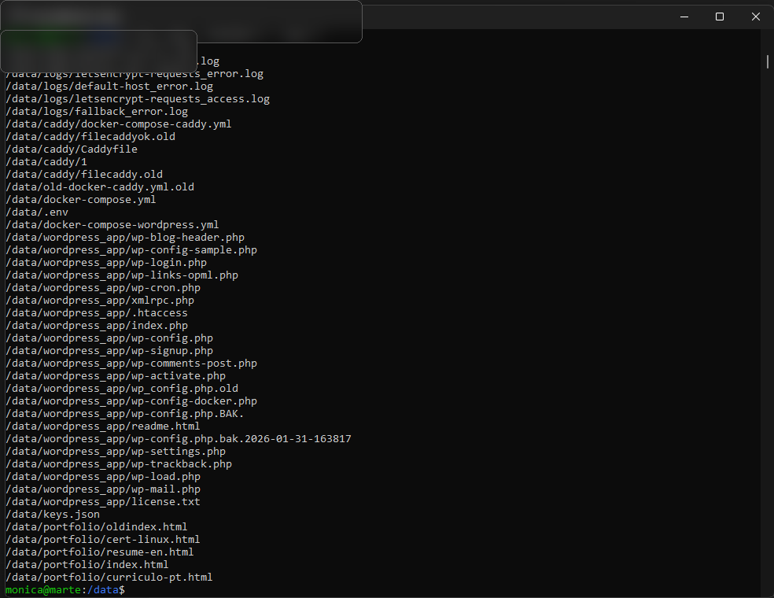
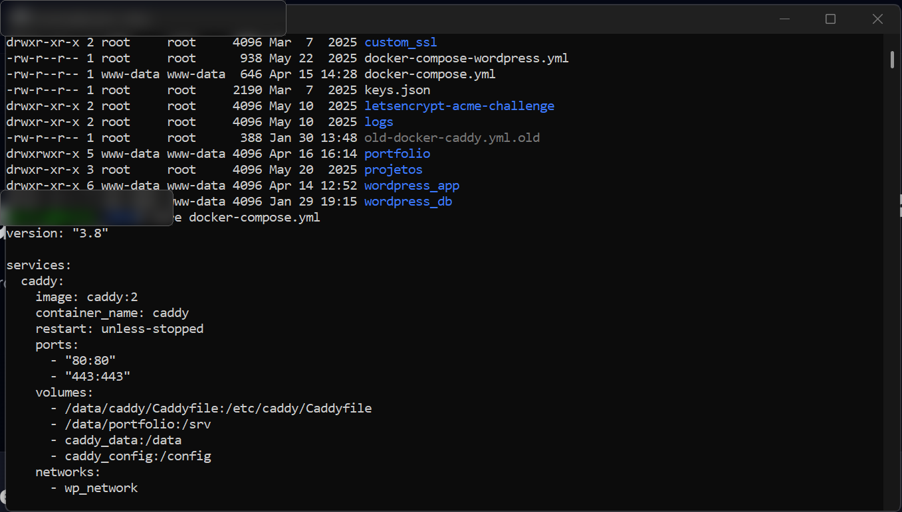
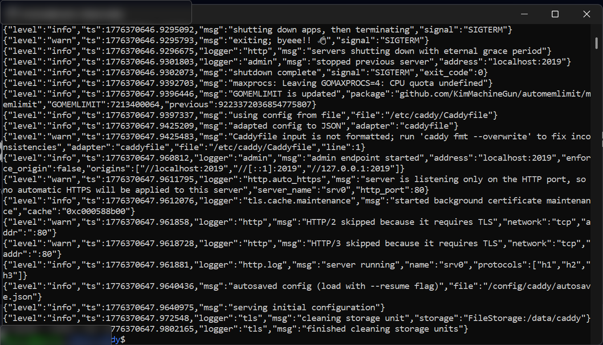
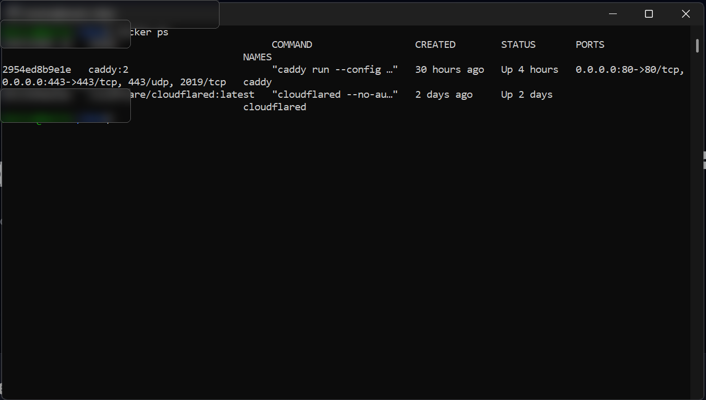

PROJETO DE INFRAESTRUTURA
Infraestrutura Self-Hosted do Portfólio
Projeto construído para publicar meu portfólio em ambiente real, utilizando Debian, Docker, Caddy, DNS e troubleshooting de infraestrutura.
Visão Geral
Este ambiente foi desenvolvido em um servidor Debian self-hosted para hospedar meu portfólio e preparar uma base reutilizável para futuras aplicações. A estrutura utiliza Docker e Docker Compose para organizar os serviços, Caddy como proxy reverso para publicação web e DNS para direcionamento do domínio.
Diagrama da Arquitetura
Fluxo simplificado da publicação do site, desde o acesso do usuário até os serviços executados em containers.

Infraestrutura Base
- Servidor Debian para hospedagem local
- Docker e Docker Compose para gerenciamento dos serviços
- Separação de aplicações em containers
- Estrutura preparada para expansão
Publicação e Rede
- Configuração de domínio e DNS
- Proxy reverso com Caddy
- Publicação de serviços web com roteamento por domínio
- Acesso remoto para administração
Desafios Resolvidos
- Validação de paths e volumes dentro dos containers
- Conflitos de portas e publicação correta dos serviços
- Cache do navegador e atualização do conteúdo publicado
- Ajustes entre DNS, Caddy e arquivos estáticos
Resultados
- Portfólio publicado em ambiente self-hosted
- Base reutilizável para novos projetos
- Evolução prática em Linux, containers e networking
- Demonstração real de infraestrutura aplicada
Caddyfile
Configuração do proxy reverso e publicação dos domínios.

Estrutura de Diretórios
Organização do diretório /data com containers, portfólio e arquivos de configuração.

Docker Compose
Exemplo da configuração do serviço Caddy e do mapeamento de volumes.

Logs do Caddy
Inicialização do serviço e mensagens operacionais do proxy reverso.

Containers em Execução
Validação visual dos containers ativos no ambiente.
